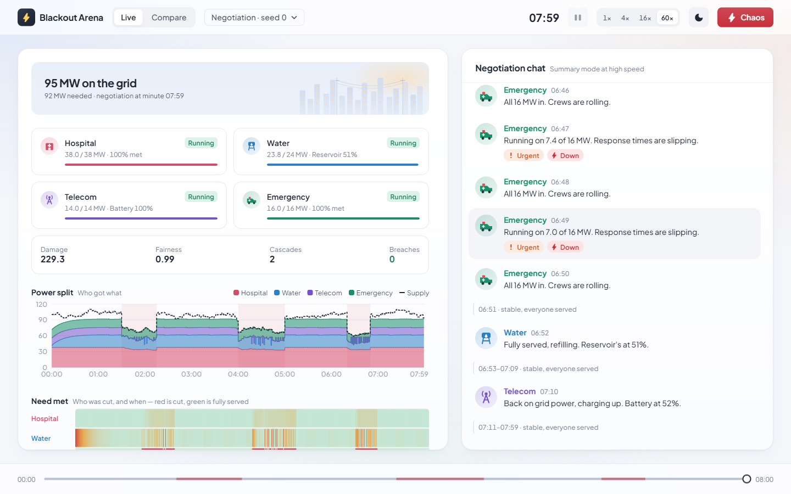
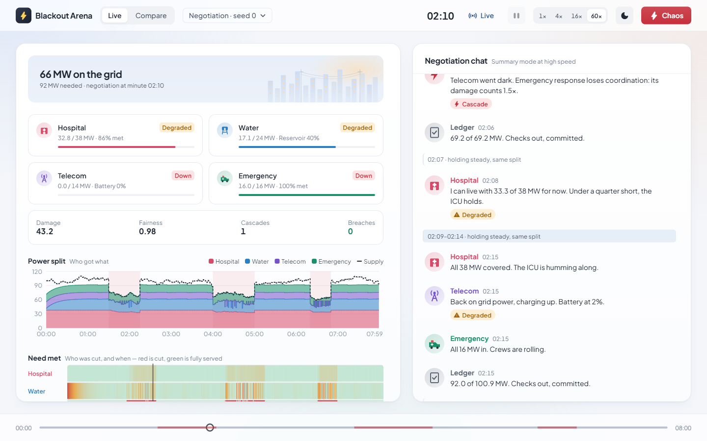
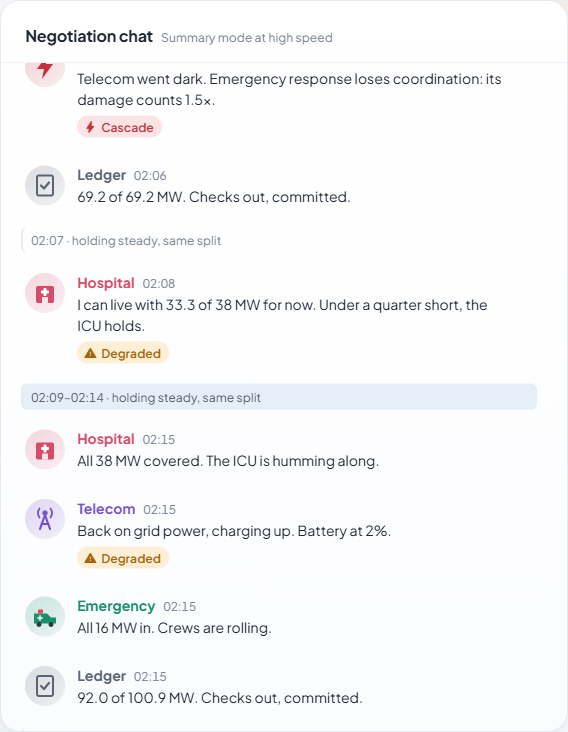
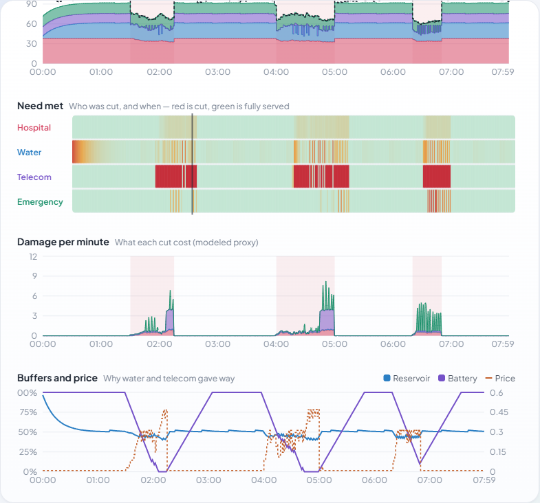
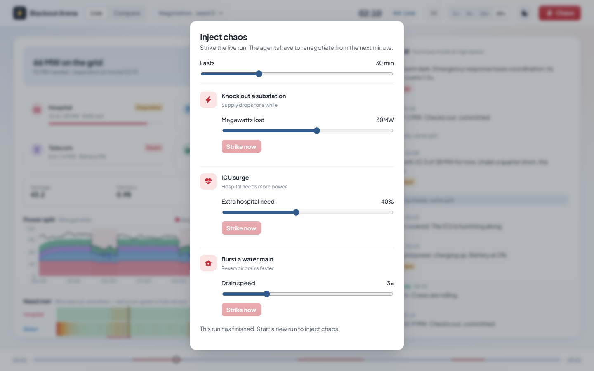
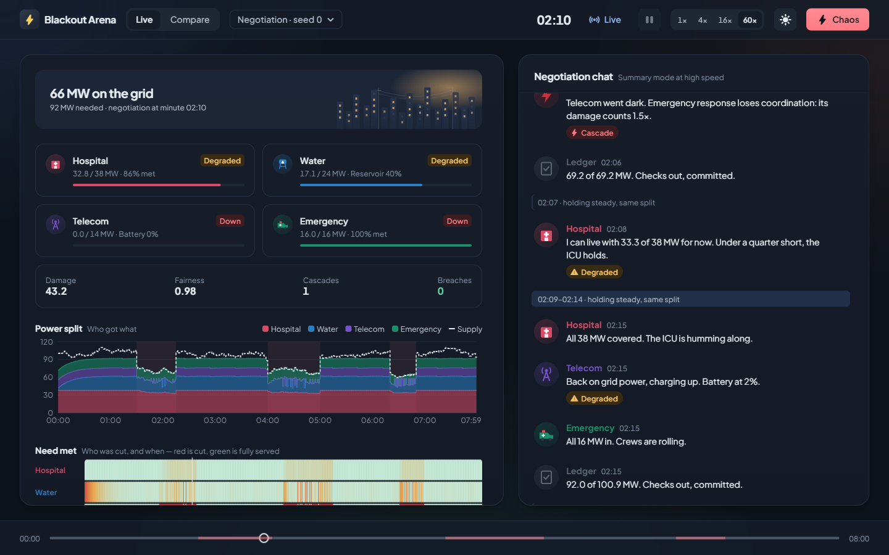
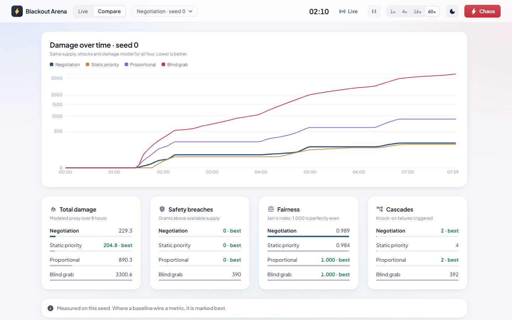

Four city utilities share a shrinking supply of emergency power during an 8-hour disaster.
Instead of a central boss deciding, each utility is an autonomous agent that negotiates.
A referee makes sure the grid is never overloaded, and a live dashboard shows it all.

Team ScaredToCompilePriyanshu Sharan (lead) · Abdul Khadar D Jamadar
StatusPhase 1 + Phase 2 done, Phase 3 next
Date14 Nov 2026
Read this first
The project in 60 seconds
If you only read one page before the meeting, read this one.
The problem (PS 1.1)
A disaster knocks out part of the power grid. There is roughly 100 MW available, it keeps going up and down,
and four critical services need about 92 MW together. When supply drops (say to 66 MW), who gets cut?
The PS asks for one autonomous agent per utility that negotiates in real time, never breaks capacity limits,
balances priority with fairness, and minimises total damage over the whole disaster.
What we built
A simulation engine (Python): 4 agents — Hospital, Water, Telecom, Emergency — negotiate every simulated minute for 8 hours (480 minutes).
A market clock that only announces a price. Agents decide how much to ask for at that price. The clock never hands out power itself.
A ledger (referee) that checks every deal against hard safety rules before committing it, plus a fallback safety net if negotiation fails.
Three baselines to beat, run on the exact same disaster: Blind grab, Proportional cut, Static priority.
A live web dashboard where judges watch the negotiation as a chat, see the numbers in charts, inject chaos, and compare strategies.
The result, honestly (20 different disasters)
0 safety breaches for our system on every run and every fuzz test. Blind grab breaches capacity ~414 times per run.
~4× less damage than Proportional (190.9 vs 787.2) and ~18× less than Blind grab (3368).
Static priority is about as good as us on damage (194.0 vs our 190.9 — within noise). We beat it on fairness (0.990 vs 0.984) and cascades (2.65 vs 3.45). On seed 0 alone, priority actually has lower damage. We say this openly.
One-line pitch: "When power drops, the agents with backup — the water tank and the telecom battery —
volunteer to give up power first, so the hospital stays served. And a referee guarantees the grid is never overloaded."
Requirements and safety
What the PS asks for, and the rules we never break
Use this page when the evaluator goes through the problem statement line by line.
The PS checklist, ticked
PS requirement
How we meet it
Status
One autonomous agent per utility, decentralized
Each agent holds its own private need, damage function and state; it alone decides its bid.
Price-based bidding rounds every minute (Layer 1). Bilateral concessions (Layer 2) are next.
Bids doneConcessions next
Supply fluctuates
Seeded random walk + 3 scripted shocks + live chaos injected from the UI.
Done
Hard capacity limits never violated
Ledger validates every commit; independent invariant checker; fuzz-tested.
Done
Balance priority vs fairness
Weighted bidding + Jain's fairness index reported. Credit system (fairness memory) is next.
MeasuredCredits next
Minimise total damage over hours
Agents bid by marginal damage; total damage measured over 8 h vs baselines.
Done
Safety rules (invariants)
Rule
Meaning
INV-1
Total power handed out ≤ power available, every minute.
INV-2
Every grant is between 0 and that utility's maximum draw.
INV-3
Commits are atomic: all agents updated, or none.
INV-4
Every commit passes ledger validation first.
INV-5
The fallback is always feasible (fixed water-filling by weight with critical floors, no randomness).
In plain words
The agents are free to negotiate however they like, but nothing they agree on reaches the grid until the ledger confirms
it fits the supply and every limit. If they can't agree in 8 rounds, a fixed, always-safe split is used instead. That is how
we get freedom for the agents and safety for the grid at the same time.
The idea, simply
How it works: an auction every minute
Think of it as a tiny auction held 480 times, with a strict referee.
🏥
HospitalNeeds 38 MW. Fine if cut a little, but past ~25% short the ICU fails fast. Most important.
💧
WaterNeeds 24 MW. Has a reservoir, so it can survive a cut for a while.
📡
TelecomNeeds 14 MW. Has a battery. Fine until the battery runs out, then towers go dark.
🚑
EmergencyNeeds 16 MW. Every MW short hurts a bit. Worse if telecom is down (crews can't coordinate).
What happens each simulated minute
1
Supply update. The grid announces how much power exists right now (e.g. 66 MW after a substation failure).
2
Market clock announces a price. It starts from last minute's price.
3
Each agent bids privately. "At this price, I want X MW." An agent asks for power only while each extra MW saves more damage than the price. Water with a full tank asks for less; the hospital near its cliff asks for all of it.
4
Price adjusts. If total bids exceed supply, price goes up; if below, it goes down. Repeat up to 8 rounds until bids fit.
5
Ledger checks and commits. Total ≤ supply? Every grant within limits? If yes, commit for everyone at once. If no — or no agreement after 8 rounds — the fallback applies a safe fixed split. The grid can never be overloaded.
6
Damage is scored. Each agent's shortfall becomes "damage", buffers drain or refill, cascades are checked.
The key design ruleAgents decide; infrastructure only aggregates and validates. The market clock only adds up bids and sets a price.
The ledger only says yes or no. Nobody central "allocates" power — that's what makes it decentralized.
No AI/LLM is used in any decision; it is all deterministic math, so the same seed always gives exactly the same result.
Cascades (things that make it worse)
Cascade A: water pressure collapses (reservoir under 20%) → hospital cooling load goes up 20%.
This is why smart agents matter: letting the telecom battery run dry is expensive later, so the negotiation has to look ahead, not just fix this minute.
Architecture
How the pieces fit together
Three layers: a pure engine, an API that streams it, and the dashboard.
Why it is built this way
Engine is pure and deterministic. Same seed + same config ⇒ byte-identical event log. That makes results reproducible and fair to compare.
The event log is the single source of truth. The dashboard, the replay scrubber and the tests all read the same events.
Safety is checked twice. The ledger validates before committing; a separate invariants.py re-checks every run (including baselines) afterwards.
Baselines face the identical disaster. Same seed, same damage model, same checker — so the comparison is apples to apples.
The website
Dashboard tour
Run it with the API + web app (see last page). It opens straight into a live run.

Live view, paused on minute 02:10 during the first shock. Supply dropped to 66 MW.
Top bar: Live / Compare, strategy + seed, clock, pause, speed (1–60×), theme, Chaos.
Left: the city strip (lit windows = how much need is met), agent tiles (Telecom is Down — its battery hit 0%), totals (damage, fairness, cascades, breaches), then the charts.
Right: the negotiation chat — e.g. "Telecom went dark… emergency damage counts 1.5×" (Cascade B).
Bottom: timeline; red bands are the three scripted shocks.

Negotiation chat. Agents only speak when something changes (shock, status change, big bid move, buffer crossing 50/25/10%). Quiet stretches collapse into one grey line. Chips: Urgent, Can wait, Yielding, Shock/Cascade. Lines are fixed templates filled with real numbers — no AI.

The charts (all share one cursor; click any minute to jump the chat there):
Power split who got what · Need met heatmap, red = cut · Damage per minute what each cut cost · Buffers & price reservoir, battery and market price.
The website
How to read the charts (and explain them)
The questions an evaluator will point at.
Power split — "who got what"
Stacked colours are each utility's power grant per minute; the dashed line is total supply. During a shock the stack shrinks.
Notice the red hospital band barely moves — the others shrink first.
Need met — "who was cut, and when"
One row per utility, one column per minute. Green = fully served, yellow = partly, red = cut hard.
You can see Telecom go solid red during each shock, Water go yellow (draining its reservoir), and the Hospital stay mostly green.
Damage per minute — "what each cut cost"
Every minute, each utility that is short adds harm according to its damage curve
(hospital: nothing until 25% short, then a steep cliff; water: only when the reservoir is low; telecom: only once the battery is empty;
emergency: grows steadily, ×1.5 if telecom is down). It is flat at zero most of the time — everyone served — with
three spikes at the three shocks. The area under the curve is the total damage number (229.3 on seed 0). It is a modeled proxy, not real casualties.
Buffers & price — "why water and telecom gave way"
Blue = water reservoir, purple = telecom battery, dashed orange = market price.
When a shock hits, the price jumps; Water and Telecom (who can coast on their buffers) bid less, so the hospital stays served.
Their buffers drain, then refill after the shock. When the battery hits 0%, that is the red block in the heatmap and part of the cascade count.
How to say it: "When power drops, the price goes up. Agents with backup volunteer first.
Damage only appears once those backups run out — and you can see exactly when that happens."

Inject chaos into the live run: knock out a substation (−MW), ICU surge (+hospital need), or burst a water main (reservoir drains faster). Agents renegotiate from the next minute. Great for a live demo: let the judge press it.

Dark mode (follows the system, toggle in the top bar). Useful on a projector.
Results
Numbers — measured, not invented
All four strategies run on the same disaster, same damage model, same independent safety checker.

Compare view, seed 0. Damage accumulating over 8 hours. Note that on this seed Static priority (orange) ends slightly below us — the UI marks it "best" honestly.
Seed 0 (the default disaster)
Strategy
Total damage ↓
Safety breaches ↓
Fairness (Jain) ↑
Cascades ↓
Ours (negotiation)
229.3
0
0.989
2
Static priority
204.8
0
0.984
4
Proportional
890.3
0
1.000
2
Blind grab
3300.6
390
1.000
392
Across 20 seeds (mean ± std) — the number to quote
Strategy
Total damage ↓
Breaches ↓
Fairness ↑
Cascades ↓
Ours (negotiation)
190.9 ± 70.6
0
0.990 ± 0.002
2.65 ± 2.20
Static priority
194.0 ± 58.6
0
0.984 ± 0.004
3.45 ± 0.59
Proportional
787.2 ± 153.0
0
1.000
2.80 ± 1.86
Blind grab
3368.1 ± 281.4
413.9 ± 33.1
1.000
415.9 ± 33.1
How to talk about this honestly
Our claim is a damage + fairness trade-off, not a clean sweep.
vs Blind grab: it overloads the grid ~400 times a run. We never do.
vs Proportional: it is "perfectly fair" (everyone cut equally) but causes ~4× more damage, because cutting the hospital 30% is far worse than cutting water 30%.
vs Static priority: about the same damage on average, but priority is rigid — it always starves water/telecom first, so it triggers more cascades and is less fair. Ours adapts to actual state (full tank vs empty tank).
Fairness of 1.000 for Proportional/Blind just means everyone was cut equally — not that it was good.
Proof and progress
Testing, and what's done vs next
Testing — 123 automated tests, all passing
Determinism: same seed + config produces an identical event log.
Ledger: rejects an over-capacity proposal and a partial commit.
Property-based fuzzing (Hypothesis): 1,500 random cases for the fallback split, 1,000 random ledger proposals, and 60 full simulations with random seeds and shocks — 0 invariant violations.
Fuzz script:scripts/fuzz.py --runs 1000 runs 1,000 random disasters against our strategy.
Blind grab baseline is confirmed to breach capacity on the default scenario (proving the checker works).
API tests: full live stream with chaos injected, 0 violations; event replay; compare endpoint.
Fallback was never needed in the 20-seed benchmark (0 fallback minutes) — negotiation always settled within 8 rounds.
FastAPI (runs, live WebSocket stream, chaos, control, replay, compare). Dashboard: live charts, negotiation chat, timeline scrubber, chaos panel, compare view, dark mode, phone layout
Done
3 · Should
Layer 2 bilateral concessions ("Water: I'll give Hospital 5 MW for 20 min"), credit-based fairness memory, multi-seed results in UI, presenter mode for the pitch
Next
4 · Nice
Ablations (ours without Layer 2 / without credit), plain-English explanations, export report
If time
Layer 2 and credits — what they will add
Layer 2: after the price settles, an agent with spare capacity (e.g. Water with a full tank) directly offers MW to an agent in trouble; the other can accept, counter or reject.
Credits: the agent that gives power banks credit, which raises its weight later — so yielding today is rewarded tomorrow. This is the "fairness over time" part of the PS and should widen our lead over Static priority.
Why is it "decentralized" if there's a market clock?
The clock only adds up bids and announces a price — it never decides who gets what. Each agent decides its own demand from its private state. The ledger only says yes/no to safety.
Where is the AI?
The agents are rule-based autonomous agents doing marginal-damage reasoning. We deliberately keep LLMs out of decisions so results are deterministic, explainable and safe. (A plain-English explanation layer may come later, after decisions are committed.)
Can it ever overload the grid?
Not in any test: every commit is validated, the fallback is always feasible, and fuzz tests over thousands of random cases found 0 violations. We say "tested", not "proven".
Static priority has lower damage on seed 0 — why use yours?
Across 20 seeds we're level on damage (190.9 vs 194.0) and better on fairness and cascades. Priority is a fixed ranking; ours reacts to real state. Layer 2 + credits (next phase) target exactly this gap.
Where do the damage numbers come from?
A modeled proxy with editable parameters in config/damage.yaml (cliff for hospital, buffers for water/telecom, linear for emergency, cascade multipliers). Relative comparison is what matters.
Is it real-time?
Yes — the dashboard streams the simulation live over a WebSocket; you can change speed, pause, scrub back, and inject chaos mid-run.
Run it
pip install pydantic numpy pyyaml fastapi "uvicorn[standard]" httpx pytest hypothesis
npm --prefix web install
# terminal 1 — API
python -m uvicorn api.app:app --port 8010
# terminal 2 — dashboard → open http://localhost:5173
npm --prefix web run dev
# tests and benchmarks
python -m pytest -q
python scripts/run_benchmark.py --seeds 20
python scripts/run_one.py --strategy ours --seed 0
3-minute demo script
1
Open the dashboard at 4×. "Four utilities, ~100 MW, 92 needed. Each is an agent."
2
At the first shock (01:30, −30 MW): point at the chat — Water and Telecom say "I can wait"; hospital stays green in the heatmap.
3
Press Chaos → Knock out a substation. Watch them renegotiate next minute; breaches stay 0.
4
Switch to Compare: same disaster, four strategies. Quote the 20-seed numbers and be honest about Static priority.
5
Close: "Decentralized agents, zero safety breaches, and a damage + fairness trade-off we can measure."